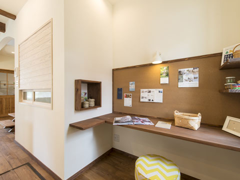
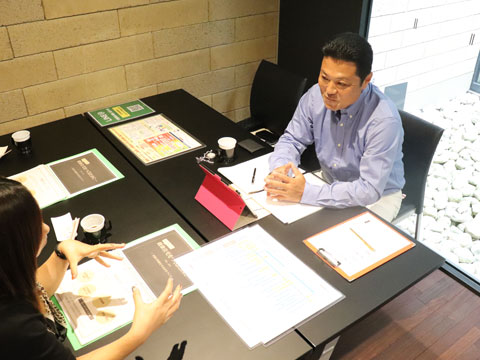
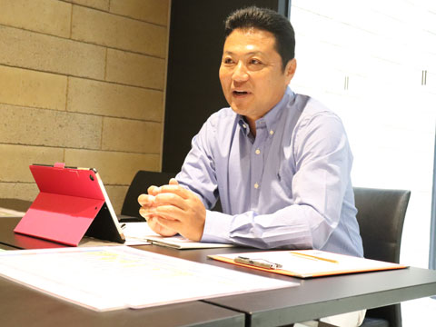
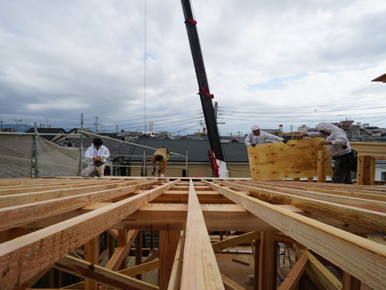
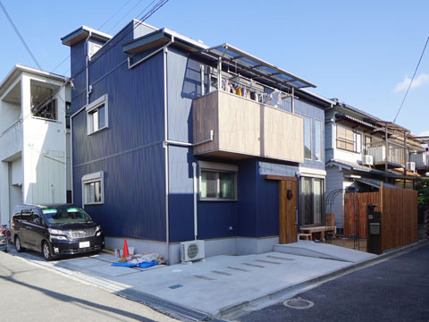
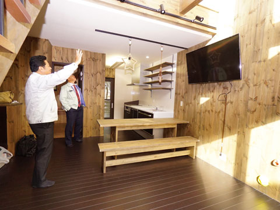

- ホーム
- 初めての方へ「ココロホームの家づくり」｜家づくりの流れ
Flow住まいづくりの進め方
ココロホームの家づくりを
流れでご紹介します

このページでは、家づくりの進め方をご紹介します。ココロホームは家族一人ひとりの要望をもとに、いつまでも安心して幸せに過ごしていける理想の住まいをつくりあげます。
ココロホームの家づくり

STEP2
相談会への参加
ココロホームでは、家づくりのイメージを固めていただくために、個別相談会を行っています。ご要望などしっかりお話を伺い、資金計画や家づくりについてご説明いたします。土地探しについても是非ご相談ください。

STEP3
打ち合わせ
ココロホームでは、まず家づくりには欠かせない資金についてしっかりお話をしています。住宅ローンの組み方についてもしっかりと確認し、無理に契約を勧めることはいたしません。
≫資金計画についてSTEP4
住宅プランニング
当社のスタッフが、住宅に対するご家族の理想や将来の夢などをじっくりとお聞きし、ご家族にとって最適と思われるプランをご提案します。住まいの間取りをはじめ、土地に関するご要望までお気軽にご相談ください。
STEP5
ご契約
プランやお見積もり、住宅ローンについてなどご納得いただけましたら、いよいよご契約とります。

STEP6
着工・上棟・中間検査・完了検査
ご家族が生活する住まいをつくるための工事がスタートします。まずは地鎮祭の日程を決め、その後着工となります。住まいの仕様や色など細かな部分についてもお客様と打ち合わせを繰り返し、完成に近づけていきます。

STEP7
完成・お引き渡し
住まいが完成したら、最終的なチェックを行ったうえでお客様に確認していただき、お引き渡しとなります。

STEP8
定期点検
定期的に点検やメンテナンスを行うほか、必要に応じて保証制度も活用できます。何か問題があった場合にはお気軽にご連絡ください。